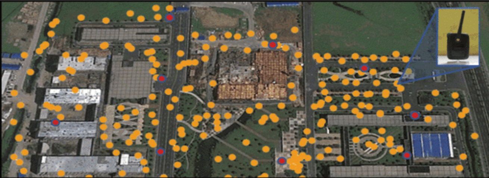
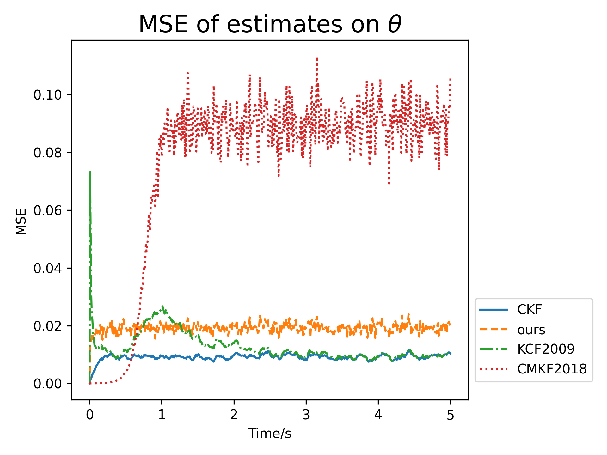
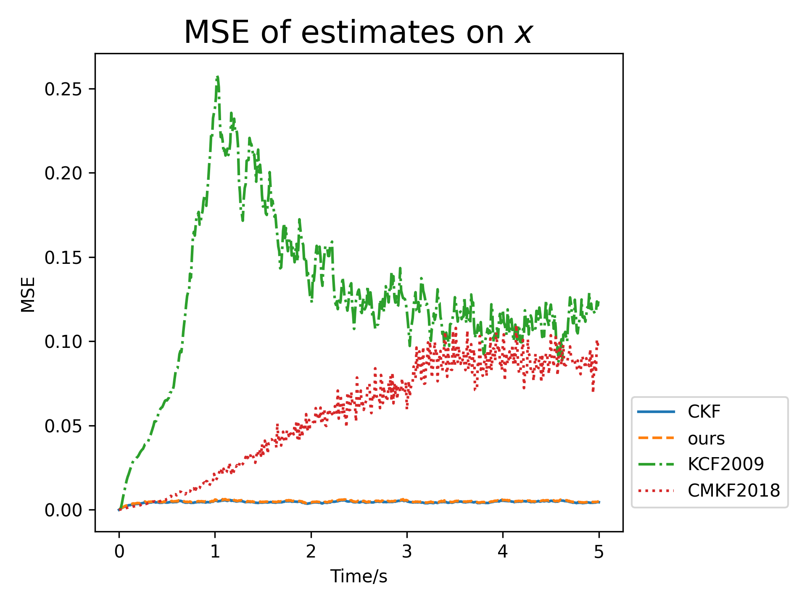

A Distributed Implementation of Steady-State Kalman Filter
Table of Contents
Background
BACKGROUND: ENERGY EFFICIENCY of DATA CENTER
Fraction of data center electricity use [Shehabi2016]
Simulation of the temperature field of a data center [Jia2020]
- Balance between energy efficiency and server reliability.
- Sensor networks enables accurate environmental monitoring with fine spatial and temporal granularity.
Background and introduction
BACKGROUND: CO$_2$ EMISSION MONITORING
Estimates of CO$_2$ emission with different methods [Basu2020]
Urban CO$_2$ monitoring with sensor networks [Mao2012]
- Achieve carbon emission peak before 2030 and carbon neutrality before 2060.
- CO$_2$ emission monitoring is hard.
- Traditional methods: inaccurate and not suitable for long-term measurement.
- Sensor networks enable accurate, large-scale and real time CO$_2$ monitoring.
Background
BACKGROUND: DISTRIBUTED STATE ESTIMATION
- Real time data transmitting and processing: very challenging in terms of bandwidth and computing.
- Solution: distributed algorithms.
- Better robustness for a single point of failure.
- Low communication and computation burden.
- Scalablility.
- Distributed state estimation (DSE): each sensor estimates the state of the system with
- its own measurement, and
- communication with its neighbors.
- How to analyze and minimize the performance gap between DSE and the optimal centralized Kalman filter (CKF)?
Problem formulation
PROBLEM FORMULATION
- System equation:
$$ x(k+1)=Ax(k)+w(k), $$
where $x(k)\in{\color{var(--myred)}{\mathbb{R}^n}}$, $w(k)\sim\mathcal{N}(0,Q)$. - Measurement equation of sensor $i$:
$$ y_i(k)=C_ix(k)+v_i(k). $$
- Full measurement equation:
$$ y(k)=Cx(k)+v(k), $$
where - $(A,C)$ is observable. Note that $(A, C_i)$ is not necessarily observable.
- Each sensor needs to estimate the state $x$.
$$ y(k)\triangleq \begin{bmatrix} y_1(k)\\ \vdots\\ y_m(k) \end{bmatrix}\in {\color{var(--myred)}\mathbb{R}^m}, C\triangleq \begin{bmatrix} C_1(k)\\ \vdots\\ C_m(k) \end{bmatrix}, v(k)\triangleq \begin{bmatrix} v_1(k)\\ \vdots\\ v_m(k) \end{bmatrix}\sim\mathcal{N}(0,R). $$
DSE LITERATURE REVIEW [He2020]
- Consensus on estimate [Olfati-Saber2009] $$ \hat x_i=\bar x_i+M_i\Big(\sum_{j\in N_i\cup\{i\}}C_i^TR_i^{-1}y_i-(\sum_{j\in N_i\cup\{i\}}C_i^TR_i^{-1}C_i)\bar x_i\Big)+{\color{var(--myred)}\gamma P_i\sum_{j\in N_i}(\bar x_j-\bar x_i)}. $$
- Consensus on measurement [Li2018] $$ \begin{aligned} Y_i&=C_i^TR_i^{-1}C_i, y_i=C_i^TR_i^{-1}y_i,\\ {\color{var(--myred)}Y_i}&{\color{var(--myred)}\leftarrow \sum_{j\in N_i\cup{i}}\pi_{i,j}Y_j}, {\color{var(--myred)}y_i\leftarrow \sum_{j\in N_i\cup{i}}\pi_{i,j}y_j},\\ P_i^{-1}&\leftarrow P_i^{-1}+\omega Y_i, P_i^{-1}\hat x_i\leftarrow P_i^{-1}\hat x_i+\omega y_i.\\ \end{aligned} $$
- Consensus on probability density function (PDF) [Battistelli2014] $$ \begin{aligned} {\color{var(--myred)}\Omega_i}&{\color{var(--myred)}\leftarrow \sum_{j\in N_i}\pi_{i,j}\Omega_j},\\ {\color{var(--myred)}q_i}&{\color{var(--myred)}\leftarrow \sum_{j\in N_i}\pi_{i,j}q_j}.\\ \end{aligned} $$
DSE LITERATURE REVIEW
| Algorithm | Consensus on | Message complexity | Stability | Analytical form of variance | Global optimality |
|---|---|---|---|---|---|
| [Olfati-Saber2009] | Estimate | $O(n)$ | Yes (if $\gamma$ is small enough) | None | No |
| [Li2018] | Measurement | $O(n^2)$ | Yes (with enough steps of consensus) | None | Yes (if $A$ is stable and perform infinite steps of consensus) |
| [Battistelli2014] | $O(n^2)$ | Yes (if $A$ is invertible) | None | No |
DECOUPLING
Diagram of most of existing DSE algorithms
- The consensus process is coupled with the local filter.
- Hard to analyze the performance.
Diagram of the DSE algorithm with decoupling
- Can we decouple the local filter from the consensus process?
- How to design local filters without information loss?
- How to leverage the consensus algorithm?
KALMAN FILTER
Kalman filter is the optimal estimator in an LTI Gaussian system. $$ \begin{aligned} \hat x(k|k-1)&=A\hat x(k-1),\\ P(k|k-1)&=AP(k-1)A^T+Q,\\ K(k)&=P(k|K-1)C^T[CP(k|k-1)C^T+R]^{-1},\\ \hat x(k)&=\hat x(k|k-1)+K(k)[y(k)-C\hat x(k|k-1)],\\ P(k)&=[I-K(k)C]P(k|k-1), \end{aligned} $$ where $\hat x(0)=0$ and $P(0)=\Sigma$.
DSE algorithm
STEADY-STATE KALMAN FILTER
- Since $(A,C)$ is observable, the Kalman filter will converge to the steady-state Kalman filter:
$$
\begin{aligned}
\hat x(k+1)&=(A-KCA)\hat x(k)+K y(k+1)\\
&=(A-KCA)\hat x(k)+\sum_{i=1}^m K_i\ y_i(k+1),
\end{aligned}
$$
where $K=[K_1,\cdots, K_m]$.
- The steady-state Kalman filter can be viewed as a linear system with multiple inputs $y_i(k)$.

Diagram of steady-state Kalman filter
- Since $(A,C)$ is observable, the Kalman filter will converge to the steady-state Kalman filter:
$$ \begin{aligned} \hat x(k+1)&=(A-KCA)\hat x(k)+K y(k+1)\\ &=(A-KCA)\hat x(k)+\sum_{i=1}^m K_i\ y_i(k+1), \end{aligned} $$
where $K=[K_1,\cdots, K_m]$. - The steady-state Kalman filter can be viewed as a linear system with multiple inputs $y_i(k)$.
Diagram of steady-state Kalman filter
Decomposition of Kalman filter
DECOMPOSITION of KALMAN FILTER
Theorem 1: Assume that
- $A-KCA$ has $n$ distinct eigenvalues;
$$
A-KCA=V\Lambda V^{-1}=V\text{diag}(\lambda_1,\cdots,\lambda_n)V^{-1}.
$$
- $A-KCA$ and $A$ do not share any eigenvalues.
Then the optimal Kalman estimate can be recovered from the local estimates $\hat\xi_i(k)$ as
$$
\begin{aligned}
{\color{var(--myblue)}\hat \xi_i(k+1)}&={\color{var(--myblue)}\Lambda\hat\xi_i(k)+\textbf{1}_n\ y_i(k+1)},\\
{\color{var(--myred)}\hat x(k)}&={\color{var(--myred)}\sum_{i=1}^m F_i\ \hat\xi_i(k)},
\end{aligned}
$$
where \(F_i=V\text{diag}(V^{-1}K_i)\).

Diagram of the decomposition of steady-state Kalman filter
Remark.
- $\hat\xi_i(k)$ is a stable estimate of $G_ix(k)$, where
$$
\begin{aligned}
G_i&\triangleq \begin{bmatrix}
C_iA(A-\lambda_1I)^{-1}\\
\vdots\\
C_iA(A-\lambda_nI)^{-1}
\end{bmatrix}.
\end{aligned}
$$
- $G_i$ represents the observable space of sensor $i$.
Theorem 1: Assume that
- $A-KCA$ has $n$ distinct eigenvalues; $$ A-KCA=V\Lambda V^{-1}=V\text{diag}(\lambda_1,\cdots,\lambda_n)V^{-1}. $$
- $A-KCA$ and $A$ do not share any eigenvalues.
Then the optimal Kalman estimate can be recovered from the local estimates $\hat\xi_i(k)$ as $$ \begin{aligned} {\color{var(--myblue)}\hat \xi_i(k+1)}&={\color{var(--myblue)}\Lambda\hat\xi_i(k)+\textbf{1}_n\ y_i(k+1)},\\ {\color{var(--myred)}\hat x(k)}&={\color{var(--myred)}\sum_{i=1}^m F_i\ \hat\xi_i(k)}, \end{aligned} $$ where \(F_i=V\text{diag}(V^{-1}K_i)\).
Diagram of the decomposition of steady-state Kalman filter
Remark.
- $\hat\xi_i(k)$ is a stable estimate of $G_ix(k)$, where $$ \begin{aligned} G_i&\triangleq \begin{bmatrix} C_iA(A-\lambda_1I)^{-1}\\ \vdots\\ C_iA(A-\lambda_nI)^{-1} \end{bmatrix}. \end{aligned} $$
- $G_i$ represents the observable space of sensor $i$.
Prediction of $y_i(k+1)$
PREDICTION of $y_i(k+1)$
- Stable system matrix + unstable input: $$ \hat\xi_i(k+1)={\color{var(--myblue)}\Lambda}\hat\xi_i(k)+\textbf{1}_n{\color{var(--myred)}y_i(k+1)}. $$
- Unstable system matrix + stable input: $$ \hat\xi_i(k+1)={\color{var(--myred)}S}\hat\xi_i(k)+\textbf{1}_n{\color{var(--myblue)}z_i(k+1)}, $$ where $S\triangleq \Lambda+\textbf{1}_n\beta^T$.
- There always exists $\beta$, which solves $$ \sum_{i=1}^n \beta_i(A-\lambda_iI)^{-1}=I. $$
- The prediction residual ${\color{var(--myblue)}{z_i(k+1)}}\triangleq {\color{var(--myred)}{y_i(k+1)}}-\beta^T\hat\xi_i(k)$ is stable.
Remark. $$ (A-\lambda_iI)^{-1}\in\text{span}\{A^0, A^1, \cdots, A^{n-1}\}. $$
DSE algorithm
DSE algorithm
DECOMPOSITION of KALMAN FILTER in MATRIX FORM
CKF fuses all local estimates $\hat\xi_i(k)$ to obatin the optimal estimate.
$$ \begin{aligned} \begin{bmatrix} \hat\xi_1(k+1)\\ \hat\xi_2(k+1)\\ \vdots\\ \hat\xi_m(k+1) \end{bmatrix}&= {\color{var(--myred)}\begin{bmatrix} S & & & \\ & S & & \\ & & \ddots & \\ & & & S \end{bmatrix}}\begin{bmatrix} \hat\xi_1(k)\\ \hat\xi_2(k)\\ \vdots\\ \hat\xi_m(k) \end{bmatrix} + {\color{var(--myblue)}\begin{bmatrix} \textbf{1}_nz_1(k+1)\\ \textbf{1}_nz_2(k+1)\\ \vdots\\ \textbf{1}_nz_m(k+1) \end{bmatrix}},\\ \hat x(k)&=F\begin{bmatrix} \hat\xi_1(k)\\ \hat\xi_2(k)\\ \vdots\\ \hat\xi_m(k) \end{bmatrix}, \end{aligned} $$ where $F\triangleq[F_1\ F_2\ \cdots\ F_m]$.
DISTRIBUTED IMPLEMENTATION of KALMAN FILTER
Let sensor $i$ infer $\frac{1}{m}\hat\xi_j(k)$, which is denoted by $\eta_{ij}(k)$.
$$ \begin{aligned} \begin{bmatrix} \eta_{i1}(k+1)\\ \vdots\\ \eta_{ii}(k+1)\\ \vdots\\ \eta_{im}(k+1) \end{bmatrix}&= \begin{bmatrix} S & & & \\ & S & & \\ & & \ddots & \\ & & & S \end{bmatrix}\begin{bmatrix} \eta_{i1}(k)\\ \vdots\\ \eta_{ii}(k)\\ \vdots\\ \eta_{im}(k) \end{bmatrix}+\begin{bmatrix} 0 \\ \vdots \\ \textbf{1}_n {\color{var(--myblue)}z_i(k+1)}\\ \vdots\\ 0 \end{bmatrix} + {\color{var(--myred)}\tilde B u_i(k)},\\ \\ \breve x_i(k)&=mF\begin{bmatrix} \eta_{i1}(k)\\ \vdots\\ \eta_{im}(k) \end{bmatrix}. \end{aligned} $$
In matrix form, $\eta_i(k+1)=\tilde S\eta_i(k)+L_i{\color{var(--myblue)}{z_i(k+1)}}+{\color{var(--myred)}{\tilde B u_i(k)}}$.
RECALL: LINEAR SYSTEM SYNCHRONIZATION
- Consider the synchronization of the following noiseless LTI system: $$ \eta_i(k+1)=\tilde S\eta_i(k)+{\color{var(--myred)}{\tilde B u_i(k)}}. $$
- Strong synchronization:
- Consistency: the average of all local states follows that $$ \sum_{i=1}^m \eta_i(k+1)=\tilde S\sum_{i=1}^m \eta_i(k). $$
- Exponential stability: agents exponentially reach consensus in the mean square sense, i.e., there exists $c>0$ and $\rho\in(0,1)$ such that $$ \mathbb{E}[||\eta_i(k)-\bar \eta(k)||^2]\le c\rho^k, \forall i\in\{1,\cdots,m\} $$
- Fixed graph [You2011, Gu2011]; time-varying graphs [Zhang2021]; random link failures [Xu2019]...
Algorithm analysis
ALGORITHM ANALYSIS
Theorem 3: For the proposed DSE algorithm with any strong synchronization algorithm,
- The average of fused estimates from all sensors coincide with the optimal Kalman estimate at any instant $k$. That is
$$ \frac{1}{m}\sum_{i=1}^m \breve x_i(k)=\hat x(k), \forall k\ge 0. $$
- The error covariance of each local estimate is bounded at any instant $k$ and can be exactly calculated.
$$ \begin{aligned} \text{Cov}(\breve e_i(k))&=\text{Cov}(\breve x_i(k)-x(k))\\ &=\text{Cov}({\color{var(--myred)}\breve x_i(k)-\hat x(k)}+{\color{var(--myblue)}\hat x(k)-x(k)})\\ &=\text{Cov}({\color{var(--myred)}\breve x_i(k)-\frac{1}{m}\sum_{i=1}^m \breve x_i(k)})+\text{Cov}({\color{var(--myblue)}\hat x(k)-x(k)})\\ &=\text{Cov}({\color{var(--myred)}\text{Consensus error}}) + \text{Cov}({\color{var(--myblue)}\text{Kalman filter error}}). \end{aligned} $$
The asymptotic covariance of consensus error is the fixed point of a Lyapunov equation.
EXAMPLE: LINEAR SYSTEM SYNCHRONIZATION
- $(\tilde S, \tilde B)$ is controllable;
- $$ {\color{var(--myred)}\prod_j|\lambda_j^u(A)|}<{\color{var(--myblue)}\frac{1+\mu_2/\mu_m}{1-\mu_2/\mu_m}}, $$ where $\lambda_j^u(A)$ represents an unstable eigenvalue of $A$; $\mu_2$ and $\mu_m$ are respectively the second smallest and largest eigenvalues of the laplacian matrix $\mathcal{L}_{\mathcal{G}}$.
DISTRIBUTED IMPLEMENTATION of STEADY-STATE KF
- Using the latest measuremnt, sensor $i$ computes the local residual and updates the local estimate by
$$ \begin{aligned} z_i(k+1)&=y_i(k+1)-\beta^T\hat\xi_i(k)\\ \hat\xi_i(k+1)&=S\hat\xi_i(k)+\textbf{1}_n z_i(k+1). \end{aligned} $$
- Transmit the message $\Delta_i(k)=(I_m\otimes\Gamma)\eta_i(k)$ to neighbors and collect messages $\Delta_j(k)$ from neighbors and apply the consensus algorithm
$$ \begin{aligned} \eta_i(k+1)&=(I_m\otimes S)\eta_i(k)+(e_i\otimes \textbf{1}_n)z_i(k+1)\\ &+{\color{var(--myblue)}\tilde B\sum_{j\in N(i)}a_{ij}(\Delta_j(k)-\Delta_i(k))}. \end{aligned} $$
- Update the fused estimate
$$ \breve x_i(k+1)=mF\eta_i(k+1). $$
Diagram of local filters
Diagram of the distributed implementation of steady-state Kalman filter
DECOUPLING
With a lossless decomposition of steady-state Kalman filter, we
- decouple the local filter from the consensus process.
- bridge the gap between DSE and linear system synchronization.
Model reduction
MODEL REDUCTION
Can the message complexity $O(m)$ be further reduced?
$$ \begin{aligned} \begin{bmatrix} \hat\xi_1(k+1)\\ \hat\xi_2(k+1)\\ \vdots\\ \hat\xi_m(k+1) \end{bmatrix}&= \begin{bmatrix} S & & & \\ & S & & \\ & & \ddots & \\ & & & S \end{bmatrix}\begin{bmatrix} \hat\xi_1(k)\\ \hat\xi_2(k)\\ \vdots\\ \hat\xi_m(k) \end{bmatrix}+\begin{bmatrix} \textbf{1}_n & & & \\ & \textbf{1}_n & & \\ & & \ddots & \\ & & & \textbf{1}_n \end{bmatrix} \begin{bmatrix} {\color{var(--myblue)}z_1(k+1)}\\ {\color{var(--myblue)}z_2(k+1)}\\ {\color{var(--myblue)}\vdots}\\ {\color{var(--myblue)}z_m(k+1)} \end{bmatrix},\\ {\color{var(--myred)}\hat x(k)}&=F\begin{bmatrix} \hat\xi_1(k)\\ \hat\xi_2(k)\\ \vdots\\ \hat\xi_m(k) \end{bmatrix}. \end{aligned} $$
- $\hat x(k)$ is what we want.
- We can perform a model reduction.
MODEL REDUCTION
Theorem 4: Given any vector $w\in\mathbb{R}^n$. Suppose $(S^T, v)$ is controllable, then there exists a polynomial of $S$, namely $p(S)$, such that $w$ can be decomposed as $$ w^T=v^Tp(S). $$
Theorem 5: Any matrix $W\in\mathbb{R}^{n\times n}$ can be decomposed as $$ W=H_1p_1(S)+H_2p_2(S)+\cdots+H_np_n(S), $$ where $H_i\triangleq e_i\beta^T$ and $p_i(S),i=1,2,\cdots,n$ are polynomials of $S$.
Proof. Suppose $p(S)=\alpha_0I+\alpha_1S+\cdots+\alpha_{n-1}S^{n-1}$, thus we have $$ w={\color{var(--myred)}\begin{bmatrix} v & S^Tv & \cdots & (S^{n-1})^Tv \end{bmatrix}}\begin{bmatrix} \alpha_0\\ \alpha_1\\ \vdots\\ \alpha_{n-1} \end{bmatrix}. $$
Proof.$$ W=\begin{bmatrix} w_1^T\\ w_2^T\\ \vdots\\ w_n^T \end{bmatrix}=e_1w_1^T+e_2w_2^T+\cdots+e_nw_n^T. $$
MODEL REDUCTION
The message complexity can be reduced to $O(\min(m, n))$.
Theorem 4: The output of the following system $\tilde x(k)$ equals the Kalman estimate $\hat x(k)$:
$$ \begin{aligned} \begin{bmatrix} \theta_1(k+1)\\ \vdots\\ \theta_n(k+1) \end{bmatrix}&=(I_n\otimes S)\begin{bmatrix} \theta_1(k)\\ \vdots\\ \theta_n(k) \end{bmatrix}+T\begin{bmatrix} z_1(k+1)\\ \vdots\\ z_m(k+1) \end{bmatrix},\\ \tilde x(k)&=H\begin{bmatrix} \theta_1(k)\\ \vdots\\ \theta_n(k) \end{bmatrix}, \end{aligned} $$ where $$ \begin{aligned} T&=\begin{bmatrix} T_1, T_2, \cdots, T_m \end{bmatrix}, H=\begin{bmatrix} H_1, H_2, \cdots, H_n \end{bmatrix} \end{aligned} $$ and $H_i$ and $T_i$ follows $$ \begin{aligned} F_i&=\sum_{j=1}^n H_jp_{ij}(S),\\ T_i&\triangleq \begin{bmatrix} (p_{i1}(S)\textbf{1}_n)^T, \cdots, (p_{in}(S)\textbf{1}_n)^T \end{bmatrix}. \end{aligned} $$Conclusion
CONCLUSION
| Algorithm | Consensus on | Message complexity | Stability | Analytical form of variance | Global optimality |
|---|---|---|---|---|---|
| [Olfati-Saber2009] | Estimate | $O(n)$ | Yes (if $\gamma$ is small enough) | None | No |
| [Li2018] | Measurement | $O(n^2)$ | Yes (with enough steps of consensus) | None | Yes (if $A$ is stable and perform infinite steps of consensus) |
| [Battistelli2014] | $O(n^2)$ | Yes (if $A$ is invertible) | None | No | |
| Ours | Estimate | $O(\min(m, n))$ | Yes (with strong synchronization algorithms) | Yes | Yes(with infinite iterations or finite-time consensus) |
Simulation and experiment
SIMULATION: INVERTED PENDULUM
- State$=[x;\ \dot x;\ \theta,\ \dot\theta]$,
$$ \begin{aligned} y_1,y_2,y_3&=x+\text{noise},\\ y_4&=\theta+\text{noise}. \end{aligned} $$
- We use a LQR controller with the state estimate of sensor 4 to stabilize the inverted pendulum.
- The communication topology is a ring.
SIMULATION: MSE of ESTIMATES
 EXPERIMENT: OUTDOOR TEMPERATURE MONITORING
- To compare with CKF, we use synthesized data with PDE discretization.
- $m=15$ sensors are deployed and they automatically build a communication network.
EXPERIMENT: OUTDOOR TEMPERATURE FIELD VISUALIZATION
EXPERIMENT: OUTDOOR TEMPERATURE FIELD VISUALIZATION
EXPERIMENT: NETWORK TRAFFIC
In this sensor network with 15 sensors, the means traffic of our DSE algorithm is nearly $\frac{1}{10}$ of that of the center in CKF.
EXPERIMENT: INDOOR TEMPERATURE MONITORING
EXPERIMENT: INDOOR TEMPERATURE MONITORING
- We discretize the heat transfer process into $n=25$ states.
- $m=12$ sensors are deployed.
Extension: Distributed Estimation with Event-triggered Communications
- Update the residual $z_i(k)$: $$ \begin{aligned} z_i(k)=y_i(k+1)-\beta^T\hat\xi_i(k),\\ \hat\xi_i(k+1)=S\hat\xi_i(k)+{\bf{1}_n} z_i(k). \end{aligned} $$
- Run the synchronization algorithm: $$ \begin{aligned} \eta_i(k+1)=\tilde S\eta_i(k)+L_iz_i(k)+\\ {\color{var(--myred)}\tilde B\sum_{j=1}^m a_{ij}(\hat\Delta_j(k)-\hat\Delta_i(k))} \end{aligned} $$
- Update the local estimate: $$ \breve x_i(k+1)=mF\eta_i(k+1). $$
Extension
Extension
Event-based Synchronization of Stochastic Linear Systems
- Consider the synchronization protocol: $$ u_i(k)=\sum_{j=1}^m a_{ij}(\hat\Delta_j(k)-\hat\Delta_i(k)), $$ where $\hat\Delta_i(k)\triangleq \Gamma\hat\eta_i(k)\in\mathbb{R}^m$, $\hat\eta_i(k)\triangleq S^{(k-k_s^i)}\eta_i(k_s^i),k\in[k_s^i, k_{s+1}^i)$.
- Triggering condition example: event occurs when $$ ||\hat\eta_i(k)-\eta_i(k)||^2\ge c_0+c_1\rho^k, $$ where $c_0,c_1>0$ and $\rho$.
- Boundedness of error is guaranteed by $c$-martingales.
Extension: Distributed Resilient Estimation
For benign sensors:
Extension: Distributed Resilient Estimation
For malicious sensors:
Proof structure

IEEE 68 bus system
- Bus 1-16: generator bus; Bus 17-68: load bus
- $68\times 2=136$ states (phase angle, angle velocity)
- $68\times 3=204$ measurements (phase angle, angle velocity, elec power)
- $$ \dot{\theta}_{i}(t) =\omega_{i}(t), $$ $$\dot{\omega}_{i}(t) =-\frac{1}{m_{i}}\left[D_{i} \omega_{i}(t)+\sum_{j \in \mathcal{N}_{i}} P_{t i e}^{i j}(t)- P_{i}(t)+w_{i}(t)\right].$$ $$ \left[\begin{array}{ccc} y_{i_1}(k) & y_{i_2}(k) & y_{i_3}(k) \end{array}\right]^\top=\left[\begin{array}{ccc} P_{e l e c, i}(k) & \theta_{i}(k)& \omega_{i}(k) \end{array}\right]^{\top}+v_{i}(k), $$

Complexity Challenge
If 4 sensors are attacked or break down, the number of possible combinations is $${204 \choose 4}=7.006\times 10^7$$ It is almost impossible to identify which is the true case in real time. However, 204 local estimators are needed in our method.Simulation Results: Distributed Resilient Estimation

Conclusion
Conclusion
CONCLUSION
- Based on a lossless decomposition of steady-state Kalman filter, we decouple the local filter from the synchronization process.
- We bridge the gap between the problem of linear system synchronization and DSE. All of the strong synchronization algorithms can be applied in our framework.
- By performing model reduction, the message complexity can be reduced to $O(\min(m, n))$.
- The performance of our algorithm is analyzed and validated with simulation and experiments.
- The result can be extended in various cases.
Bibliography
Bibliography
- [Mao2012] X. Mao, X. Miao, Y. He, X. Li and Y. Liu, "CitySee: Urban CO2 monitoring with sensors," 2012 Proceedings IEEE INFOCOM, 2012, pp. 1611-1619.
- [Jia2020] Q. Jia, J. Tang, J. Wu, X. Hu, Y. Lin, and H. Xia. "Reinforcement learning for green and reliable data center," Chinese Journal of Intelligent Science and Technology, 2020, 2(4): 341-347.
- [Shehabi2016] A. Shehabi, S. Smith, D Sartor and R. Brown. "United States Data Center Energy Usage Report," 2016.
- [Olfati-Saber2009] R. Olfati-Saber, "Kalman-Consensus Filter : Optimality, stability, and performance," Proceedings of the 48h IEEE Conference on Decision and Control (CDC) held jointly with 2009 28th Chinese Control Conference, 2009, pp. 7036-7042.
- [Li2018] W. Li, G. Wei, D. W. C. Ho and D. Ding, "A Weightedly Uniform Detectability for Sensor Networks," in IEEE Transactions on Neural Networks and Learning Systems, vol. 29, no. 11, pp. 5790-5796, Nov. 2018.
- [Battistelli2014] G. Battistelli and L. Chisci, “Kullback–Leibler average, consensus on probability densities, and distributed state estimation with guaranteed stability,” Automatica, vol. 50, no. 3, pp. 707–718, 2014.
- [He2020] S. He, H. Shin, S. Xu and A. Tsourdos, "Distributed estimation over a low-cost sensor network: A Review of state-of-the-art," in Information Fusion, vol. 54, pp. 21-43, 2020.
- [Gu2012] G. Gu, L. Marinovici and F. L. Lewis, "Consensusability of Discrete-Time Dynamic Multiagent Systems," in IEEE Transactions on Automatic Control, vol. 57, no. 8, pp. 2085-2089, Aug. 2012.
- [Xu2020] L. Xu, Y. Mo and L. Xie, "Distributed Consensus Over Markovian Packet Loss Channels," in IEEE Transactions on Automatic Control, vol. 65, no. 1, pp. 279-286, Jan. 2020.
- [Liu2016] X. Liu, J. Lam, W. Yu and G. Chen, "Finite-Time Consensus of Multiagent Systems With a Switching Protocol," in IEEE Transactions on Neural Networks and Learning Systems, vol. 27, no. 4, pp. 853-862, April 2016.
- [You2011] K. You and L. Xie, "Network Topology and Communication Data Rate for Consensusability of Discrete-Time Multi-Agent Systems," in IEEE Transactions on Automatic Control, vol. 56, no. 10, pp. 2262-2275, Oct. 2011.
- [Zhang2021] J. -L. Zhang, X. Chen and G. Gu, "State Consensus for Discrete-Time Multiagent Systems Over Time-Varying Graphs," in IEEE Transactions on Automatic Control, vol. 66, no. 1, pp. 346-353, Jan. 2021.
EXPERIMENT: NETWORK TRAFFIC
Let each sensor broadcast its $C_i$ at the beginning so that each sensor can have access to global information which it needs.